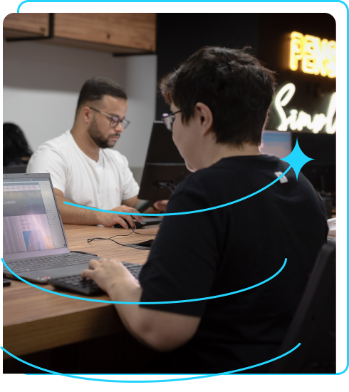

Cursos e Certificações (Alura)
- Formação: A partir do zero: iniciante em
programação - 29h
- Lógica de programação: mergulhe em programação com JavaScript - 6h
- Lógica de programação: explore funções e listas - 6h
- Git e GitHub: compartilhando e colaborando em projetos - 8h
- Lógica de programação: praticando com desafios - 8h
-
Formação: A partir do zero: HTML e CSS para projetos web -
52h
- HTML e CSS: ambientes de desenvolvimento, estrutura de arquivos e tags - 8h
-
HTML e CSS: Classes, posicionamento e Flexbox - 8h
- HTML e CSS: cabeçalho, footer e variáveis CSS - 6h
- HTML e CSS: trabalhando com responsividade e publicação de projetos - 6h
- HTML e CSS: praticando HTML/CSS - 8h
- HTML e CSS: responsividade com mobile-first - 12h
-
Formação: Pratique HTML e CSS em projetos Web - 35h
- HTML5 e CSS3 parte 1: crie uma página da Web - 8h
- HTML5 e CSS3 parte 2: posicionamento, listas e navegação - 8h
- HTML5 e CSS3 parte 3: trabalhando com formulários e tabelas - 8h
- HTML5 e CSS3 parte 4: avançando no CSS - 8h
